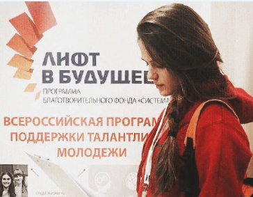
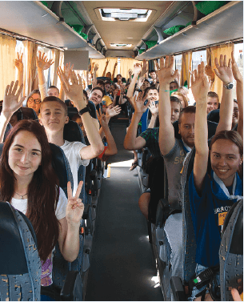

2.1. Инвестиции в человеческий капитал
2.1.1. Новые кадры для инновационной экономики
Для построения инновационной экономики требуются квалифицированные кадры, обладающие высоким уровнем развития профессиональных компетенций и навыками проектной деятельности. Инвестиции в человеческий капитал являются неотъемлемой частью общей стратегии АФК «Система», способствующей привлечению и удержанию лучших профессионалов, развитию человеческих ресурсов и мотивации на достижение результата.
Всероссийская научно-образовательная программа «Лифт в будущее»
«Лифт в будущее» – всероссийская научно-образовательная программа, учрежденная БФ «Система» и Московским государственным университетом им. М. В. Ломоносова в 2011 году и направленная на поиск и развитие талантливой молодежи, а также поддержку детского и юношеского технического творчества, научно-исследовательской деятельности и инженерно-конструкторского проектирования. Программа нацелена на создание в России системы опережающей подготовки молодых специалистов в формате программ дополнительного образования и предполагает раннее включение школьников и студентов в инновационный сегмент экономики. «Лифт в будущее» способствует повышению кадрового потенциала высокотехнологичных компаний АФК «Система», а также формированию резерва для наукоемких отечественных предприятий и перспективных отраслей промышленности.Программа реализуется при поддержке Министерства образования и науки Российской Федерации (Минобрнауки России) и целого ряда субъектов Российской Федерации, где проводились соответствующие мероприятия: Московская область, Республика Саха (Якутия), Республика Башкортостан, Свердловская область, Смоленская область, Краснодарский край, Владимирская область, Республика Крым и другие.
Участники программы – учащиеся 8–11 классов школ, организаций среднего профессионального образования и студенты, имеющие высокую мотивацию к изучению естественно-научных и точных дисциплин, а также преподаватели среднего, высшего и дополнительного образования, заинтересованные в популяризации науки и готовые к профессиональному самосовершенствованию.
В 2014–2015 годах Президент Российской Федерации Владимир Путин в своих ежегодных обращениях к Федеральному Собранию подчеркивал важность создания Национальной технологической инициативы, необходимой для перехода к новым технологическим укладам и противодействия вызовам, с которыми страна столкнется через 15–20 лет. Появившаяся в 2011 году программа «Лифт в будущее» вносит вклад в решение этой задачи через формирование нового поколения кадровой инженерной элиты страны.
Главным инструментом реализации программы является практико-ориентированная проектная работа, направленная на развитие инновационных отраслей, приоритетных для развития Корпорации, российских регионов и наукоемких отраслей. Мероприятия адресной поддержки, направленные на индивидуальную работу с талантливыми детьми и молодежью, проводятся по специально разработанной методике, основанной на междисциплинарном проектном подходе при активном участии индустриальных партнеров из числа компаний Группы АФК «Система».
В 2015 году к оценке заявок, представленных на конкурс «Система приоритетов», было привлечено 50 экспертов из различных отраслей. В проведении инженерно-конструкторских школ и экспертизы проектов приняли участие специалисты 14 компаний Корпорации, в том числе из МТС, РТИ, «Биннофарм», «Медси», «Детский мир», «МТС-Банк», Segezha Group, Группы «Кронштадт», Технопарка «Саров» и других.
Согласно заключению Экспертного совета Агентства стратегических инициатив программа «Лифт в будущее» стала действенным инструментом выявления и отбора талантливых молодых людей, создания для них особых условий развития и формирования из них сообщества новых лидеров для высокотехнологичных региональных предприятий, российской экономики и социальной сферы. Тиражирование этой практики признано целесообразным во всех субъектах Российской Федерации.
Эффективность модели «Лифта в будущее» как площадки для поиска и ускоренного развития молодых талантливых кадров и проектных команд для высокотехнологичных и наукоемких отраслей признана на федеральном уровне. На реализацию программы в 2015 году было выделено государственное софинансирование в размере 6 млн руб. на оплату путевок для участников выездных инженерно-конструкторских школ, победители которых впервые смогли претендовать на гранты Президента Российской Федерации

«Сейчас программа «Лифт в будущее» нацелена на подбор, подготовку и профориентацию детей прежде всего школьного возраста. Постепенно программа будет расширяться и охватит другие возрастные категории. У ее участников появится возможность переходить со ступени на ступень вплоть до уровня молодых специалистов. Сегодняшние школьники смогут подавать заявки на участие в студенческих конкурсах, а также будет следующая ступень – поддержка молодых специалистов и предпринимателей в сфере инженерных высокотехнологичных специальностей. Наше уникальное преимущество – это понимание того, какими качествами должен обладать будущий успешный сотрудник ДЗК, а также владение оригинальными преподавательскими методиками. Более сложная структура программы интереснее для АФК «Система», ведь компании Группы смогут впоследствии пользоваться тем кадровым резервом, который составят участники программы».
Елена Чернышкова
Президент БФ «Система»
Согласно заключению Экспертного совета Агентства стратегических инициатив программа «Лифт в будущее» стала действенным инструментом выявления и отбора талантливых молодых людей, создания для них особых условий развития и формирования из них сообщества новых лидеров для высокотехнологичных региональных предприятий, российской экономики и социальной сферы. Тиражирование этой практики признано целесообразным во всех субъектах Российской Федерации.
Эффективность модели «Лифта в будущее» как площадки для поиска и ускоренного развития молодых талантливых кадров и проектных команд для высокотехнологичных и наукоемких отраслей признана на федеральном уровне. На реализацию программы в 2015 году было выделено государственное софинансирование в размере 6 млн руб. на оплату путевок для участников выездных инженерно-конструкторских школ, победители которых впервые смогли претендовать на гранты Президента Российской Федерации.
Реализация программы «Лифт в будущее» в 2015 году
В рамках реализации программы «Лифт в будущее» в 2015 году прошел Всероссийский конкурс региональных молодежных проектов «Система приоритетов», направленный на включение учащихся школ и организаций среднего профессионального образования в программы инновационного развития региона. В конкурсе приняли участие около 700 старшеклассников из 79 регионов Российской Федерации. Путевками в научно-образовательные школы «Лифт в будущее» были награждены 350 победителей из 40 регионов страны.
В отчетном году совместно с Минобрнауки России было проведено 3 межрегиональных научно-образовательных школы «Лифт в будущее», где велась подготовка школьников, студентов и педагогов по специально разработанной для них программе, ориентированной на решение конкретных задач отраслей и регионов.

Я рад, что многолетнее партнерство Министерства образования и науки Российской Федерации и БФ «Система» продолжается. В этом году нам удалось объединить на площадке научно-образовательной школы «Лифт в будущее» не только 150 победителей ежегодного Всероссийского конкурса региональных школьных проектов «Система приоритетов», но и 350 детей, которые приедут на профильную инженерную смену благодаря квотам от министерства».
Вениамин Каганов
Заместитель министра образования и науки Российской Федерации
Межрегиональные научно-образовательные школы «Лифт в будущее» в 2015 году
| Место проведения | Даты проведения | Количество участников |
|---|---|---|
| Анапа | 19 марта – 9 апреля | 150 |
| Ступино | 7–27 августа | 100 |
| Артек | 13 ноября – 3 декабря | 100 |
Достижения победителей конкурсов и школ «Лифт в будущее»:
-

- создание прототипа системы сенсорного замещения (поддержано Фондом «Сколково» и Фондом поддержки слепоглухих «Со-единение»);.
- проектирование прототипа модульного дрона для использования в труднодоступных районах Восточной Сибири (особо отмечено компанией «РТИ»);
- разработка проекта по электрификации Крыма и подготовка предложения по реконструкции города Севастополя
В рамках «Лифта в будущее» были также организованы следующие мероприятия: конкурс методических разработок преподавателей «Наставник» (13 победителей); конкурс для студентов, молодых ученых и аспирантов «Intellect1ALL» (58 проектов-победителей); конкурс студенческих интернет-стартапов (4 проекта-победителя получили места в Бизнес-инкубаторе Российского экономического университа им. Г. В. Плеханова) и программа стажировок для молодых специалистов «Шаг к успеху». Лучшие проекты участников программы были представлены на Московском фестивале науки в Московском государственном университете им. М. В. Ломоносова и Всероссийском форуме «Будущие интеллектуальные лидеры России» в Ярославле
 В 2015 году по путевке Технопарка «Саров» при поддержке Департамента образования администрации города Сарова и отдела образования Дивеевского района Нижегородской области 22 школьника из Сарова и Дивеево – победители школьных, городских и всероссийских олимпиад по естественно-научным дисциплинам и соревнований по робототехнике из школы дополнительного образования «Вектор++» – стали участниками профильных смен программы «Лифт в будущее» в молодежных лагерях «Артек» и «Смена». В дальнейших планах – организация образовательных мероприятий программы на площадке Технопарка.
По итогам конкурса «Шаг к успеху» для студентов и недавних выпускников ведущих российских вузов были подготовлены 46 рабочих мест в МТС, «МТС-Банк», «Детский мир», «Биннофарм», «Бизнес-Недвижимость», БЭСК, «Медси», МГТС, «Интеллект Телеком», «Таргин», «СГ-трейдинг».
Для кадрового обеспечения реализации программы «Лифт в будущее» в 2015 году были проведены курсы подготовки более 30 преподавателей и руководителей лабораторий и мастерских научно-технического творчества по уникальной программе «Школы генеральных конструкторов».
Конкурсы, грантовые программы, внутрироссийские стажировки, реализованные в рамках программы «Лифт в будущее» в 2015 году
| Формат | Количество | Количество участников |
|---|---|---|
| Конкурсы/td> | 3 | 770 |
| Грантовые программы | 1 | 400 |
| Внутрироссийские стажировки | 2 | 185 |
Результаты реализации программы к 2015 году
школьников и студентов стали участниками мероприятий «Лифта в будущее»
школьников и студентов стали победителями и призерами
школьников получили гранты «Лифт в будущее»
представителей бизнеса, научноисследовательских и образовательных организаций стали кураторам проектов программы
студентов стали стипендиатами программы
конкурса студенческих работ прошли стажировку на высокотехнологичных предприятиях Европы
проведено среди школьников и студентов
получили гранты на организацию проектной работы со школьниками в лабораториях ведущих вузов России – STEM-центры
прошли повышение квалификации в Московском государственном университете им. М. В. Ломоносова